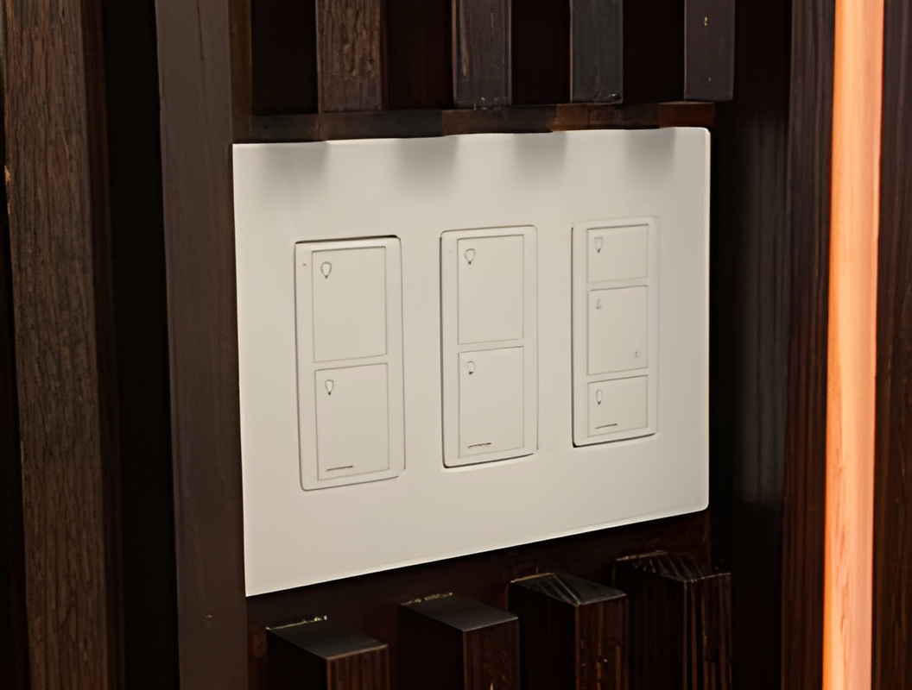

Okosotthonok segítségével az energiaspórolás nagyon egyszerűvé válik.
Egy okos hőszabályzót be lehet állítani, hogy mindig olyan hőmérséklet legyen amilyet akarsz, anélkül, hogy fölöslegesen energiát fogyasztana. Ha például télen egy hosszú munkanap után egy fűtött házba szeretnél hazajönni, nem kell egész nap bekapcsolva hagyni, elég a telefonoddal felkapcsolni a fűtést, egy fél órával érkezésed előtt. Sok okosotthonnál ezt időzíteni is lehet.
A hőszabályzás egy másik módja az ablakok sötétítése. Napszaktól (ablakok tájolásától) és évszaktól (céltól) függően automatikusan sötétül be az ablak: Nyáron ha éppen besüt a nap sötét, nem engedi be a fényt és meleget, viszont télen, vagy ha hidegebb van a kívánt hőmérsékletnél akkor meg igen.
Az okos lámpák automatikusan igazodnak a fennálló fényhez, ahhoz képest lesz sötétebb, világosabb. Ez akkor nagyon hasznos, ha nincsen teljesen sötét, de nem is szeretnél vakító fényt, be lehet állítani, hogy csak egy kicsit világítson, így energiát spórolsz. Az okos hőszabályzóhoz hasonlóan utóbbit is lehet távolról irányítani.
Okostermosztát
Világítás irányítópanel